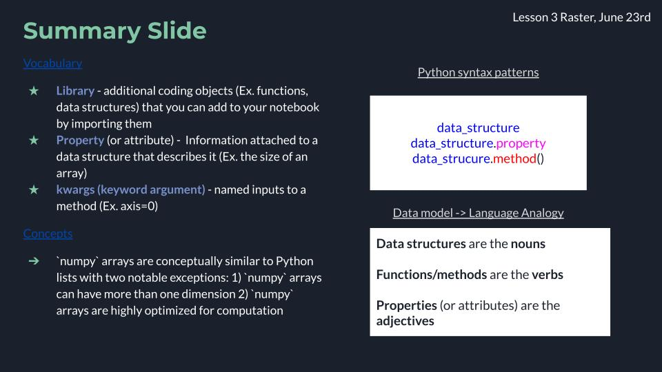
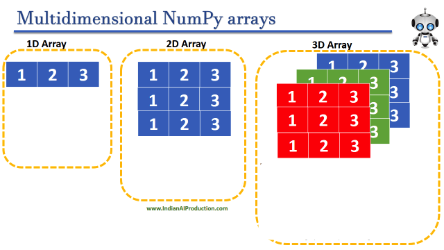
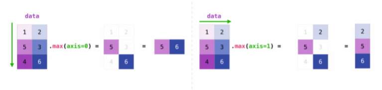

Arrays and numpy#
Lesson Content
🗃️ Libraries
🧊
numpyData structures📁 Creating and Inspecting
numpyarrays🚅 More than one dimension
➕ Math and Aggregations
Context#
Today we are building up our arsenal of data structures with a really exiting one - the numpy array. Numpy arrays can be used on their own but they also underlie many really useful libraries. xarray, the primary library we will use to manipulate rasters, uses numpy arrays to store the data. numpy is also highly optimized for large computations, which is the benefit we gain from stepping from the generic list Python structure to the more specialized numpy array.

🗃️ Libraries#
Today we are going to dig into our first library in Python! A library is a like an “extras” package for a programming language (think Settlers of Catan expansion pack). It is a set of commands that doesn’t automatically come activated when you use Python, but that you can still use if you just tell Python that you plan to do so. You let python know you are going to use a library with an import statment. After you do that the additional commands become availble.
# Attempting to use the `math` libray before importing
math.factorial(3)
---------------------------------------------------------------------------
NameError Traceback (most recent call last)
Cell In[1], line 2
1 # Attempting to use the `math` libray before importing
----> 2 math.factorial(3)
NameError: name 'math' is not defined
# Importing a Python library
import math
# Attempt #2 to use the `math` libray, after importing
math.factorial(3)
Once we have imported the library we can use the new commands that the library contains. The math library was just an example and it isn’t the focus of this lesson, but if you want you can see a list of math commands here.
🌀 More Info: Standard vs. Non-standard Libraries
One large chunk of libraries are together referred to as the Python Standard Library. These libraries are not a part of the “core” language (everything we can do without import statments) but have still been offically accepted into the Python distribution package and are maintained in the same way as the rest of the core language. You can read more here.
There are also libraries which aren’t a part of this designation, and are still widely used and developed, but they are simply not included when you hit the “Download Python” button. Non-standard libraries are maintained by groups of developers outside of the Python Software Foundation and anyone can make one. That includes you!
🧊 Data structure: Arrays#
Arrays are the new data structure of this lesson. They are similar to lists in that they represent a group of values. Arrays are also simliar to list because you reference specific values using an index. The main difference between lists and arrays is that arrays can have multiple dimensions.
Still, if you array only has 1 dimension (like a list), why not just use a list? Because:
numpyarrays are super optimized for speednumpyarrays have lots of funcions build in that let you do extra things to a list
In the end the choice between an array and a list depends on what kind of data you have and what you want to do with it. There is also an element of personal preference.

Image ammended from Indian AI Production.
numpy library#
numpy is the standard Python library for dealing with arrays and matricies. A lot of time and energy has gone into making numpy fast.
import numpy as np
🌀 More Info: xarray
xarray is another array/matrix library that has gained a LOT of traction among scientists. It is a great library and it is developed by a group of scientists in the earthdata community so it often works really well for earth science applications.
There are two big problems with xarray right now:
it doesn’t have good spatial referencing. This means that there isn’t good tooling for people to, for example, pick a data point based on latitude and longitude
There isn’t a great way to read
xarraydata from the cloud
These are both problems that are being actively worked on by members of the community and will, I think, be resolved in the near future. Until then, though, and for the sake of stability, this summer we are focused on numpy. If you are interested in trying xarray, certainly go for it or talk to me.
Creating and Inspecting numpy arrays#
Because arrays are so similar to lists one common way to make an array is by starting with a list.
We use np.array() to convert a list to an array. In that line np. reminds Python which library we are referecing. Here np. means numpy, which is what we told Python to call numpy when we imported it with import numpy as np.
reflectance_list = [25, 65, 43, 13, 54]
reflectance_array = np.array([25, 65, 43, 13, 54])
reflectance_array
array([25, 65, 43, 13, 54])
Nothing very special so far.
What we get with the array, though, is some extra properties (information) and methods (actions). To continue with our analogy from the previous lessons, if data structures are nouns, and functions/methods are verbs, properties are the adjectives. They describe the object to you.
Some useful properties of an array are:
dtype: the data type of the array (Ex. integer, float, etc.)
shape: the number of items along each dimension
Properties are applied using a period . at the end of the object:
Ex.
my_array.property
reflectance_array.dtype
dtype('int64')
reflectance_array.shape
(5,)
We will look at some useful methods in a bit.
Vocab note: You will sometimes hear the word attribute in place of property. Either one works.
👀 Notice
We have seen both properties and methods before for lists. Now that we have seen them in multiple places, you might start noticing a pattern.
Properties of objects you access with
data_structure.property. They tell you something about the objectMethods of objects you access with
data_structure.method(). They do something to the object.
Starting Structures
list_ex = ['co','co2','ch4']array_ex = np.array([6.5, 7.3. 2.9])
Examples of properties
print(array_ex.shape) # returns (3,)
Examples of methods
list_ex.append('o3')array_ex.full(3)
Array Indexes#
You can access elements of the array by index, just like with lists.
# Return the 5th value in the array
reflectance_array[4]
54
# Return the last value in the array
reflectance_array[-1]
54
With a one-dimensional array this looks exactly the same as a list. With higher-dimensional arrays there is a little more to keep track of.
📝 Check your understanding
Get the shape of the array
Get the value of the 3rd item in the array
More than one dimension#
The array we made so far is a one-dimensional array. Very often when working with arrays you will have two or more dimensions. You can create arrays like this by putting lists inside of lists, or nesting them.
nested_list = [[1,2,3], [4,5,6]]
array_2d = np.array(nested_list)
The array we just created looks like this:
1 |
2 |
3 |
4 |
5 |
6 |
array_2d
array([[1, 2, 3],
[4, 5, 6]])
print(array_2d.shape)
(2, 3)
Oen thing that you have to start keeping track of once your arrays have more than one dimension is their axes. An axis is a number assigned to each new dimension to keep track of it.

Image from Code Guru
You might often hear/read arrays called ndarrays. This is short for an n-dimensional array, which refers to the fact that it can have any, or “n”, number of dimensions.
reflectance_list = [[1, 2, 3], [4, 5, 6]]
reflectance_array = np.array(reflectance_list)
Indexing multi-dimensional arrays#
When indexing multi-dimensional arrays we use the same square bracket [] syntax. To get a single number we need to specify the index for each of the axes that we have in the array. So if we have a 3 dimensional array we need 3 indexes to specify exactly which value we want.
# Reflectance_array has two dimensions, accessed using the property `ndim` (number of dimensions)
reflectance_array.ndim
2
reflectance_array
array([[1, 2, 3],
[4, 5, 6]])
# lets get the second value down and the third value across
reflectance_array[1, 2]
6
If you would like to see an entire slice of data (for example, the whole second row) you don’t have to specify an index for every dimension.
reflectance_array[1]
array([4, 5, 6])
Finally, note that you can also use the slice operator : with the mutli-dimensional indexes as well:
reflectance_array[0, 1:3]
array([2, 3])
What is the use of this?
With these small examples it isn’t that much of a mystery what any particular value is. Once you start working with real data it will become much more challenging to get a sense of your dataset, so you will likely spend a few minutes after opening any new dataset inspecting it using indexes and probably also using some of the aggregations from the next section.
📝 Check your understanding
Consider an array of the following form called example_array:
1 |
2 |
3 |
4 |
5 |
6 |
7 |
8 |
9 |
10 |
11 |
12 |
13 |
14 |
15 |
16 |
17 |
18 |
19 |
20 |
What is the value at index [0, 2]?
What is the result of
example_array[4]?What is the result of
example_array[1:3, 2]?Give the index to return the value 15.
Array Math and Aggregations#
Once we start getting into manipulating the values of matrices we are approaching some of the principles of linear algebra. If you have taken linear algebra before then you’ll be right at home. If not, don’t worry too much. The operations that you are most likely to use don’t get too deep.
Because we are working with matricies instead of single numbers, if you want to do addition on a matrix, you have two options:
Add the same number to every item in the array
Add a value depending on the position of the item to the items in an array
With method 2 the most important thing to remember when you start trying to add/subtract/multiply values to an array is that the shape of you array is important. So, if you have a 3x2 array and you want to add some values, you need to add another matrix which has the shape 3x2.
reflectance_array
array([[1, 2, 3],
[4, 5, 6]])
# Adding the same value to the whole matrix
reflectance_array + 10
array([[11, 12, 13],
[14, 15, 16]])
# Creating a new array of shape 4x2
second_array = np.array([[1,2],[3,4], [5,6], [7,8]])
print(second_array.shape)
(4, 2)
reflectance_array + second_array
---------------------------------------------------------------------------
ValueError Traceback (most recent call last)
<ipython-input-34-a246eba9a3c1> in <module>
----> 1 reflectance_array + second_array
ValueError: operands could not be broadcast together with shapes (2,3) (4,2)
One thing to be careful of is that numpy will try to help you out by changing the shape of your matrix if it doesn’t make sense. This is called broadcasting and it can be helpful, but it can also lead to errors if you aren’t aware that it is happening.
# 2x3 matrix + 1x3 matrix -> no error
reflectance_array + np.array([1,2,3])
array([[2, 4, 6],
[5, 7, 9]])
If this concept is confusing there are some really great visuals of adding arrays in the numpy docs.
More math#
Since numpy in a library intended for computational mathematics it has most any function built ito it that you could ever want. In general, googling “numpy”, then the function you want (Ex. “numpy dot product”) will get you want you need. There is also a list of functions in the docs.
Aggregations#
Another really common operation, both during processing and while inspecting a dataset, is to run some kind of aggregation. There are lots of them build into numpy:
Syntax |
Description |
|---|---|
|
Maximum value |
|
Minimum value |
|
Standard deviation |
|
Mean value |
|
Sum total of all the values |
These methods are all run with the object.method() syntax.
reflectance_array.sum()
288
reflectance_array.max()
65
The aggregation functions have an additional option with arrays of specifying over which axis you would like to take the aggregation. This is done using a key word argument.
We saw un-named arguments when we used the .append() method to add methane to our list of pollutants in the lists lesson:
pollutants = ['o3', 'co2',' nox']
pollutants.append('ch4')
In that case ‘ch4’ is the argument. Sometimes, though, to use an argument you have to tell the method what you want it to do with that argument. This is the use of Key word arguments.
Vocab note: You will often see in documentation the options for arguments listed as args (pronounced like a pirate) and the key word argument options listed under kwargs (pronounced like a pirate that just accidently ran into something).
The syntax for a kwarg is to put it inside the parenthesis of the method with an equals sign:
# Specifying axis as a kwarg
reflectance_array.sum(axis=0)
array([5, 7, 9])
reflectance_array.max(axis=0)
array([25, 65, 54])
Here is a visual showing how an aggregation over an axis returns a value for the aggregation for each element along that axis:

Image from the numpy docs
There are more great visuals for aggregations in the numpy docs.
📝 Check your understanding
Consider an array of the following form called example_array:
2 |
4 |
6 |
8 |
10 |
12 |
What is the output of
example_array.max()?Over which axis (0 or 1) was the
sum()method run to get a result of[10, 14, 18]?